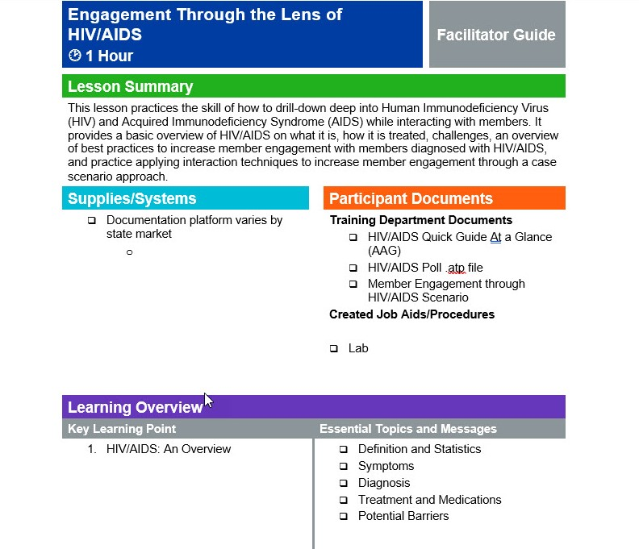
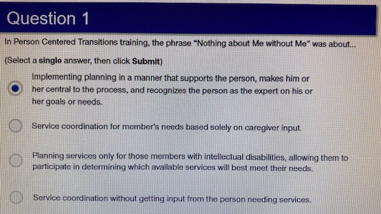
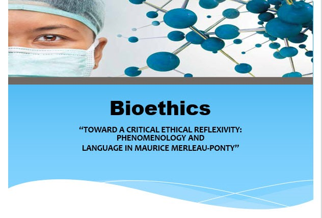

Work Examples
Facilitator Guide
This instructor led training complete with a facilitator guide showcases my ability to develop instructor led training using a facilitator guide. The facilitator guide encompasses twenty-three pages and includes: instructions, things to say, ask, and do. The training covers the clinical skill of how to drill-down into Human Immunodeficiency Virus (HIV) and Acquired Immunodeficiency Syndrome (AIDS) while interacting with a patient. It provides a basic overview of HIV/AIDS on what it is, how it is treated, challenges, an overview of case management (CM) best practices to increase patient engagement with patients diagnosed with HIV/AIDS, and practice applying interaction techniques to increase patient engagement though a case scenario approach.
This project was very time consuming based on scheduling meetings with subject matter experts and finding time to work with leadership. The course was completed in a total of eight weeks from start to finish. Developing the course materials included research into HIV/AIDS, meeting individuals with HIV/AIDS. identifying barriers, and Social Determinants of Health. Development of the course followed the ADDIE model of instructional design: Analysis, Design, Development, Implementation, and Evaluation. Media used: Microsoft PowerPoint and Word. Module length is: one hour.
Competency Assessment
This competency assessment showcases my ability to develop a competency assessment based on established course objectives. Competency assessments are built for establishing a blueprint for excellence performance. They identify skill, knowledge, and experience of an individual. The competency assessment is the second step for individuals to complete right after attending an instructor led or web-based training.
This competency assessment is an example of my ability to develop an assessment which is a critical step in the training process. I followed the ADDIE model of instructional design. Subject matter experts were identified to assist with question development. This competency assessment takes an individual approximately 20 minutes to complete with a 90% or higher mastery score to pass. The assessment is made up of ten questions that include: multiple choice, True and False, Scenario based, drag and drop, and single select type questions. Media used: Articulate Storyline and a Learning Management System (LMS).
PowerPoint Training
This PowerPoint based training showcases my ability to develop a PowerPoint presentation used for facilitated training. The PowerPoint has twenty-one slides and can be facilitated in twenty minutes. This training covers Bioethics terminology and ethical understanding. It provides an overview of bioethics, reflexivity. speech, and bioethical judgements.
This project took approximately two weeks to complete from start to finish. Research was completed online with no internal subject matter experts where located internally in the organization. Development of the course followed the ADDIE model of instructional design: Analysis, Design, Development, Implementation, and Evaluation. Media used: Microsoft PowerPoint and word. Module length: 20 minutes.
